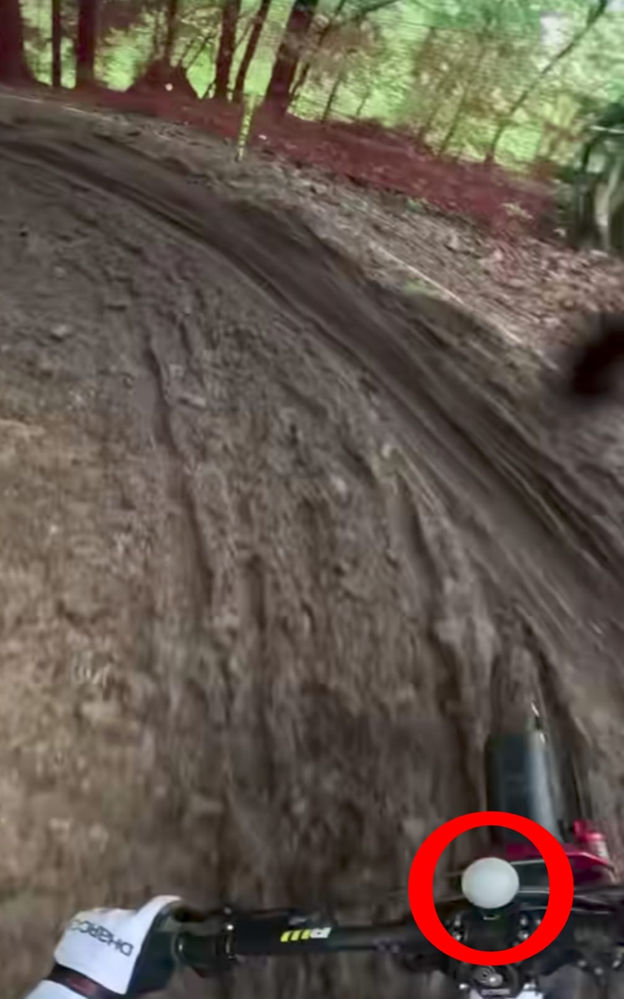

Nel mondo del downhill, quest’anno RockShox ha introdotto una novità interessante per gli atleti: la possibilità di bloccare la forcella direttamente in gara tramite un sistema elettronico. Questo sistema è dotato di un mega LED che diventa rosso quando la forcella è bloccata, offrendo un chiaro feedback visivo al rider.
Il sistema permette ai rider di avere un controllo immediato e intuitivo della forcella, favorendo una guida più aggressiva e stabile nei tratti in cui la sospensione non è necessaria, come sulle parti più lisce o in velocità.
Il blocco forcella in gara fa davvero la differenza nelle prestazioni? Questa domanda è cruciale per capire quanto questa innovazione impatti realmente sui tempi di gara. Al momento, però, non si è ancora dimostrato così vantaggioso da stravolgere i risultati o migliorare in modo significativo i tempi degli atleti.
Nonostante il valore tecnologico e la comodità di poter controllare il blocco direttamente dal manubrio, la reale efficacia in termini di prestazioni resta ancora un tema aperto, su cui gli stessi professionisti sono divisi.
← Torna alle curiosità